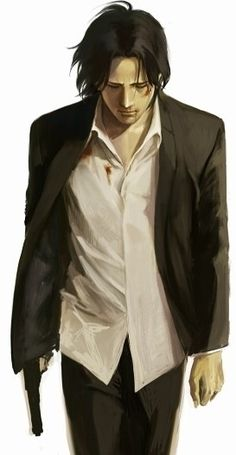

-->JOhan LIBERTE :
aw3ar cchaaaakhsiyya chirrira .

-->Dr.TENMA :
aw3ar cchaaaakhsiyya dryfa .

sf yallah bslama
تدور أحداث مانغا مونستر في أوروبا في نهاية القرن العشرين، وتحديدًا في ألمانيا الغربية قبل الوحدة مع ألمانيا الشرقية حتى نهاية القرن العشرين بعد توحد الشطرين. تبدأ القصة ببطل المانغا الطبيب كينزو تينما، الطبيب الياباني البارع الذي جاء من اليابان ليدرس في ألمانيا الغربية ويعمل في أحد أرقى مستشفيات ألمانيا الغربية آنذاك؛ مستشفى آيسلر في مدينة دوسلدورف. برع الطبيب تينما في الجراحات العصبية، وكان السبب الأكبر في نجاح مستشفى آيسلر ورواج شهرته. يؤنبه ضميره يومًا حينما يكتشف أن رب منزل توفي لأنه لم يعمل العملية له، بل عالج شخصًا آخر ذو منزلة اجتماعية مع أنه جاء بعد الرجل المتوفى، فيقع في تأنيب ضمير شديد جعله يقرر أن يعالج بحسب أولوية الوصول، لا المكانة الاجتماعية. ذات يوم يستقبل المستشفى طفلاً مصابًا بطلقٍ ناري في رأسه، وبينما الطبيب تينما يتجهز ويستعد للعملية إذ برفاق عمله يخبروه بأن المدير يأمره بأن يعالج محافظ المدينة الذي أصيب قبل قليل، فيرفض ويكمل علاج الصبي. يستقبل المستشفى بعدها أخت الطفل التوأم وهي مصابة بصدمة نفسية متمتمة بعبارة "اقتل!"، فتوضع في غرفة منفردة. بعد ذلك يأتي الخبر بأن المحافظ توفي، فيلقي رفيقاه اللذان أخبراه بأمر المدير أصابع الاتهام إليه، ويعاقبه بعدها مدير المستشفى بأن يقيله من رئاسة مجلس الجراحين ويوقف دعم تمويله لبحث تينما العلمي، فيصاب تينما بإحباط شديد فيقصد المستشفى ويجلس بجانب الطفل الذي عالجه، ويبدأ حينها يخاطب نفسه بأنه لم يفعل أن شيء خاطئ، وأن أرواح الناس متساوية ولا تفضيل فيها، فيزداد غضبه ويقول بأن المدير والجراحَين هم من يستحق الموت، فيسمعه الطفل يوهان المصاب بانفصام الشخصية، وفي تلك الليلة يقتل المدير والجراحَين من قبل يوهان ويلوذ بالفرار هو وأخته، في حين يكون الطبيب تينما في منزله ثملاً مستاءً مما حل به. بعد هذه الحادثة ترجع للطبيب تينما شهرته ومكانته في المستشفى، ويشك فيه المحقق في الشرطة الفيدرالية رونج، ولكن لانعدام الأدلة التي تدين تينما، فقد كان في منزله ثملاً وقت الحادثة، يتوقف التحقيق في القضية. وبعد مرور بضع سنين، تحدث سلسلة جرائم قتل الأزواج، هذا وحيث أن يوهان عندما أحضر إلى المستشفى مصابًا بالطلق في رأسه في تلك الليلة، كان قد قُتل والداه بالتبني أيضًا في نفس الحادثة، وكانت اخته هي الناجية الوحيدة. تتسارع الأحداث قيكتشف تينما أن يوهان هو الفاعل، ويذكره يوهان بانه هو من قتل المدير والجراحين بناءً على طلبه تلك الليلة. تبدأ من هذه اللحظة القصة في منعطف آخر، حيث يصبح تينما محققا أكثر من كونه طبيبًا، ويهرب من المستشفى بعد أن يكون قد اشتبه به في قضية قتل بستاني، ويعيش بعدها حياة الهارب من العدالة في نفس الوقت الذي يسافر فيه من مدينة إلى أخرى متنقلاً بحثًا عن يوهان ومكتشفًا للحقيقة. في نهاية القصة، يظهر أن يوهان مصاب بانفصام شخصية، حيث أن الشخصية الأخرى هي لأخته التي عانت في ظل تجارب الحكومة التشيكوسلوفاكية في إنشاء جيل بلا رحمة ولا شعور كهتلر فيما سمي بمشروع جيل النخبة.
waaaw Dr.Tenma waa3ir
aw3ar cchaaaakhsiyya chirrira .
aw3ar cchaaaakhsiyya dryfa .
sf yallah bslama